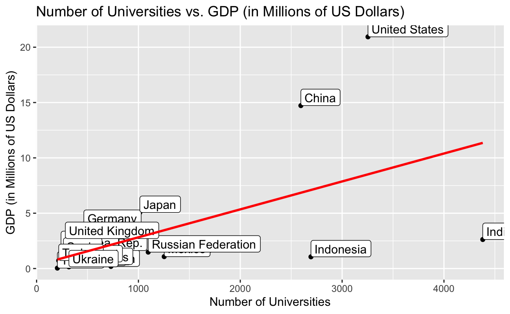

In my final paper for DACSS601, I am examining the amount of Universities in a country versus the country’s GDP.
As Laozi once said, “Give a man a fish and he will eat for a day. Teach a man to fish and he will eat for a lifetime.” Numerous modern economists agree, with Allan Fisher noting that education was an important instrument in economic policy. More broadly, the economic theory of human capital explained that investment in human capacities was the core of economic development.
Yearly, the World Bank attempts to produce a complete list of GDPs (in US Dollars) for each country engaged with the World Bank. Unfortunately, the GDP data can be incomplete in less developed countries, but for the final project, we will use the assumption that the GDP is all from 2020.
The data for the amount of Universities per country was gathered from a free-trial from statista.com. It maintained the amount of Universities per country as of July 2020.
Clearly, education has a human capital value to a nation’s economy. But where are the statistics to back up this hypothesis? For my final project, I will visualize and provide basic statistics in comparing education (measured through the amount of Universities per country) and economy (measured through GDP per country in USD).
The two data sources I used were official World Bank data for the GDP per country as measured in US dollars and statista.com data for the number of Universities per country. Since statista.com is a paid service, I was only able to access the spreadsheet download, not any of the sources.
I had to merge the two spreadsheets in order to compare the two vectors. I first read in the two individual data sets using the function read_excel, and then cleaned each spreadsheet individually. I then used the function merge based off of the vector, Country. I finally cleaned up the new merged data set.
UniPerCountry <- read_excel("../../_data/UniPerCountry.xlsx")
GDPPerCountry <- read_excel("../../_data/WorldBankGDPData.xlsx")
names(UniPerCountry)[1] <- 'Country'
names(UniPerCountry)[2] <- 'Number of Universities'
GDPPerCountry[1] <- NULL
UnivsGDP <- merge(GDPPerCountry, UniPerCountry,by=c("Country"))
NumberOfUniversities <- UnivsGDP$`Number of Universities`
GDPdata <- UnivsGDP$`Millions of US Dollars`/1000000
NumberOfUniversities<- as.numeric(NumberOfUniversities)
CountryVector <- UnivsGDP$`Country`
I believe that measuring higher education is a strong and reliable way of measuring education for numerous reasons. Firstly, it is typically one of the main demogrpahics used to measure education for both states in the U.S. and other countries. Additionally, it is some of the most precise data that can be gathered to measure education. I chose the number of Universities as it shows the education investment that a country (whether publicly or privately) desires to input.
ggplot(UnivsGDP, aes(x=NumberOfUniversities)) + geom_histogram(bins=5)
[1] 948.4[1] 381[1] 4177[1] 1106.687Here I looked at the statistical summary of the University vector. This included the distribution (historgram), the central tendency (mean, median) and the variance (standard deviation). Obviously, the data is extremely skewed to the right, with the histogram showing a large right tail and the mean is larger than the median.
I chose GDP as the measure of a country’s economy as it is both accurate and a strong snapshot into a nation’s production efficiency. As it was gathered by the World Bank, it is as official as it can be, making the data reliable for use. GDP has always been used as a measurement of a country’s economy by economists, so I believe that it can be used to measure a country’s economy.
ggplot(UnivsGDP, aes(x = GDPdata)) + geom_histogram(bins=10)
[1] 2.693387[1] 1.281199[1] 20.89736[1] 4.802353Here I looked at the statistical summary of the GDP vector. This included the distribution (historgram), the central tendency (mean, median) and the variance (standard deviation). Obviously, the data is extremely skewed to the right, with the histogram showing a large right tail and the mean is larger than the median.
ggplot(UnivsGDP, aes(x = NumberOfUniversities, y = GDPdata)) +
geom_point() +
labs(x = "Number of Universities", y = "GDP (in Millions of US Dollars)", title = "Number of Universities vs. GDP (in Millions of US Dollars)") +
geom_label(aes(label=Country),hjust=0, vjust=0) +
geom_smooth(method = "lm", se = FALSE, color='red')

In this visualization, I used a scatterplot to display the relationship between the Number of Universities in a country versus its GDP. I added a linear regression line to show that generally, as the number of Universities rises, the GDP of its respective country also rises.
I chose to use a scatterplot or geom_point() because it allows me to look at the large range of data that I am analyzing. It gives both focus to the closer ranged variables as well as the outliers. I could have used other plots such as a quantile plot or a jitterplot, but I believe that the scatterplot would be more appropriate as the outliers would significantly impact the quantile plot, rendering inaccurate data and there are only 25 observations, making a jitterplot essentially the same as a scatterplot.
As an undergraduate taking this course, I was very nervous about my abilities and if I would be able to keep up in this course. I had taken a couple of coding courses in high school, but I never really considered computer science as a thoughtful sub-field in social sciences. Then, I became interested in the DAPPLS letter of specialization. Through my advisor, Professor Gross, I was persuaded to take this course to introduce myself to R and learn the central tenent in terms of computational social science. I am happy to say that I have not only learned so much about R and CSS, but about myself, my work ability, and what I want to study and do for a living.
I think the hardest part about going into R was the subtle differences there were between it and C++ or Java. In a lot of ways, R is far easier, yet I was still stuck with the mentality of coding with that standard of programming. Professor Atkisson’s patience and teachings were far and above what I expected and it allowed me to finally succeed in R coding, especially RMarkdown.
I knew going into the final project that I wanted to study some form of economic disparity, as it somewhat coincided with an internship that I was also participating in this summer. Leveraging education as the independent variable seemed important enough to investigate, so I chose my two variables as such. The most difficult parts were mastering the basic points of RMarkdown and the GIT connection, but once it was finally clarified enough, everything seemed to blend together. The hardest part currently is learning all of the R visualization techniques to produce the best graphics that I can. For instance, the labeling for the closer variables seem to overlap to the point where it seems to be unreliable. I would want to learn how to space those out and make it easier to read. If I were continuing the project, I would break down the number of Universities variable to study retention rates of those Universities. Additionally, one of the biggest issues in terms of educational disparity is not only economic, but based off of race and gender. I would want to tie those in to provide a better explanation and visualization and give context to other significant forms of independent variables.
I wanted to study the relationship between education and economic outlook on their respective countries, so I found data on the number of Universities in a country and the GDP of that country. I believe that measuring education as the number of Universities not only measures the amount of students/educational institutions, but the investment into education by the country. I found that as the number of Universities increases, the GDP of that country increases. There were outliers (for instance, India vs. the U.S.), but there was a positive correlation nevertheless. This is backed up by statistical analysis:
res <- cor.test(NumberOfUniversities, GDPdata,
method = "pearson")
res
Pearson's product-moment correlation
data: NumberOfUniversities and GDPdata
t = 3.4278, df = 23, p-value = 0.002298
alternative hypothesis: true correlation is not equal to 0
95 percent confidence interval:
0.2419374 0.7941474
sample estimates:
cor
0.5814806 Using the pearson correlation test, we can run a correlation test between the Number of Universities and the GDP (in Millions of USD). Since the p-value is less than the significance level used (0.05), we can conclude that the Number of Universities and the GDP of a respective country have a signficant correlation with a correlation coefficient of 0.58 and and a p-value of 0.002298.
Policy involved would be investing more in education, specifically policies involving higher education. We can clearly see that as the number of Universities increases, the GDP of the country increases. Policy decisions include making public Universities free (subsidized), supporting more research, and waiving student loans. If there is not action, the disparity in education could decrease GDP and as such, the nation’s economy.
Fisher AGB: Education and Economic Change. W. E. A. Press, South Australia; 1946. Schultz T: Investment in human capital. AER 1961, 51: 1–17. https://data.worldbank.org/indicator/NY.GDP.MKTP.CD https://www.statista.com/statistics/918403/number-of-universities-worldwide-by-country/
Distill is a publication format for scientific and technical writing, native to the web.
Learn more about using Distill at https://rstudio.github.io/distill.